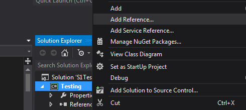

Project Setup
Add a reference to the library.
Right click your project > Add Reference...
Click on Browse...
Select the dll & click Add.
Click OK.
Now, everytime you compile your project the library (.dll) will be copied next to the executable.
You should be able to import it & use it.
using Nel_S1Library;
using Nel_S1Library.ImageSearch;
//.....
private S1Controller s1Controller = new S1Controller();
private ImageSearch img = new ImageSearch();
You can catch exceptions to give feedback to the user.
'Attaching' to Studio One
GetS1()
private S1Controller s1Controller = new S1Controller();
private ImageSearch img = new ImageSearch();
private IntPtr s1 = IntPtr.Zero;
try
{
s1 = s1Controller.GetS1();
}
catch (Exception ex)
{
MessageBox.Show("Error: " + ex.Message); //Outputs useful feedback on errors
}
ImageSearching
searchBitmap(imageToFind[imgNumber], tolerance)
You can loop throughimageToFind.Count()if you want.
private S1Controller s1Controller = new S1Controller();
private ImageSearch img = new ImageSearch();
private IntPtr s1 = IntPtr.Zero;
private List<Bitmap> smallBmp; //Pictures to find
try
{
s1 = s1Controller.GetS1();
img.CaptureApplication(s1); //Give a full picture of S1 to searchBitmap()
smallBmp.Add(new Bitmap("picture1.bmp")); //First image to find
smallBmp.Add(new Bitmap("picture2.bmp")); //Second image to find
for (int loop = 0; loop < smallBmp.Count(); loop++)
{
location = img.searchBitmap(smallBmp[loop], 0);
}
}
catch (Exception ex)
{
MessageBox.Show("Error: " + ex.Message);
}
Clicking
LeftClick()RightClick()
There are multiple ways of clicking. The simplest one (only X & Y location needed) is shown below.
private S1Controller s1Controller = new S1Controller();
private ImageSearch img = new ImageSearch();
private IntPtr s1 = IntPtr.Zero;
private List<Bitmap> smallBmp;
private int offsetY = 47; //In case you need an offset
try
{
s1 = s1Controller.GetS1();
img.CaptureApplication(s1);
smallBmp.Add(new Bitmap("picture1.bmp"));
smallBmp.Add(new Bitmap("picture2.bmp"));
for (int loop = 0; loop < smallBmp.Count(); loop++)
{
location = img.searchBitmap(smallBmp[loop], 0);
for (int i = 0; i < location.Count; i++)
s1Controller.LeftClick(location[i].X, location[i].Y - offsetY);
}
}
catch (Exception ex)
{
MessageBox.Show("Error: " + ex.Message);
}
Full Code Example
Toggles FX once you click on the button.
using Nel_S1Library;
using Nel_S1Library.ImageSearch;
using System;
using System.Collections.Generic;
using System.Drawing;
using System.Linq;
using System.Windows.Forms;
namespace Example
{
public partial class Form1 : Form
{
public Form1()
{
InitializeComponent();
fxOff_B.Add(new Bitmap("img\\fxOff.bmp"));
fxOff_B.Add(new Bitmap("img\\fxOffSelected.bmp"));
fxOff_B.Add(new Bitmap("img\\fxOffFXChannel.bmp"));
fxOff_B.Add(new Bitmap("img\\fxOffPost.bmp"));
fxOff_B.Add(new Bitmap("img\\fxOffPostSelected.bmp"));
fxOn_B.Add(new Bitmap("img\\fxOn.bmp"));
fxOn_B.Add(new Bitmap("img\\fxOnSelected.bmp"));
fxOn_B.Add(new Bitmap("img\\fxOnFXChannel.bmp"));
fxOn_B.Add(new Bitmap("img\\fxOnPost.bmp"));
fxOn_B.Add(new Bitmap("img\\fxOnPostSelected.bmp"));
}
private S1Controller s1Controller = new S1Controller();
private ImageSearch img = new ImageSearch();
private IntPtr s1 = IntPtr.Zero;
private List<Rectangle> location;
private bool fxOn = true;
private int offsetY = 47;
private List<Bitmap> fxOff_B = new List<Bitmap>();
private List<Bitmap> fxOn_B = new List<Bitmap>();
private void FXTurnOn()
{
for (int loop = 0; loop < fxOff_B.Count(); loop++)
{
location = img.searchBitmap(fxOff_B[loop], 0);
for (int i = 0; i < location.Count; i++)
s1Controller.LeftClick(location[i].X, location[i].Y - offsetY);
}
fxOn = true;
}
private void FXTurnOff()
{
for (int loop = 0; loop < fxOn_B.Count(); loop++)
{
location = img.searchBitmap(fxOn_B[loop], 0);
for (int i = 0; i < location.Count; i++)
s1Controller.LeftClick(location[i].X, location[i].Y - offsetY);
}
fxOn = false;
}
private void button1_Click(object sender, EventArgs e)
{
try
{
s1 = s1Controller.GetS1();
img.CaptureApplication(s1);
if (fxOn)
FXTurnOff();
else
FXTurnOn();
}
catch (Exception ex)
{
MessageBox.Show("Error: " + ex.Message);
}
}
}
}
You may need to run your application in admin mode if it doesn't work!